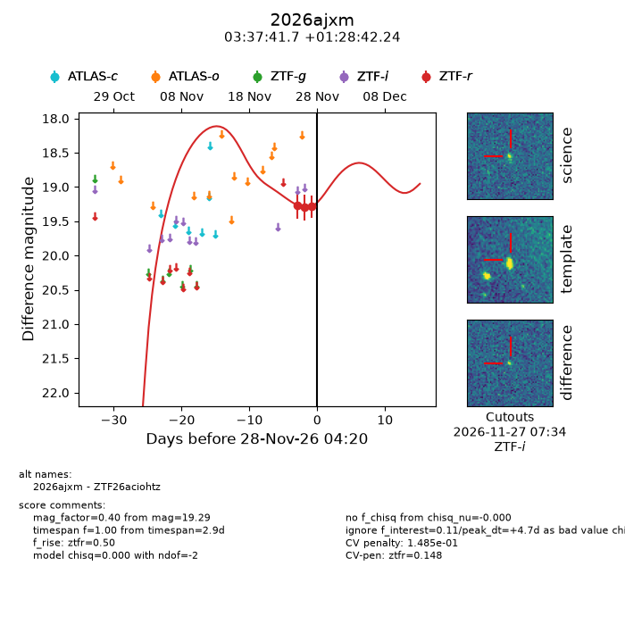
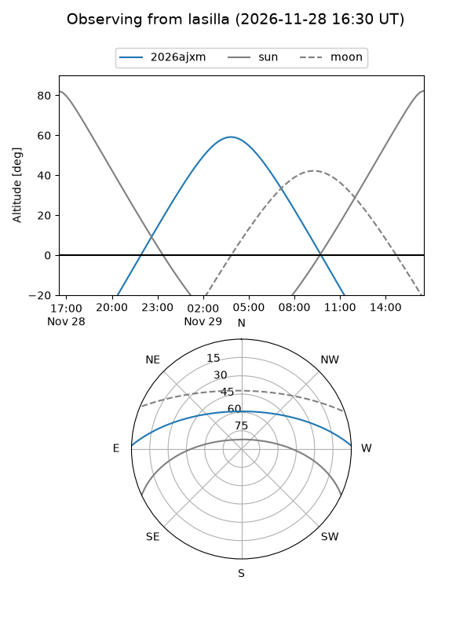
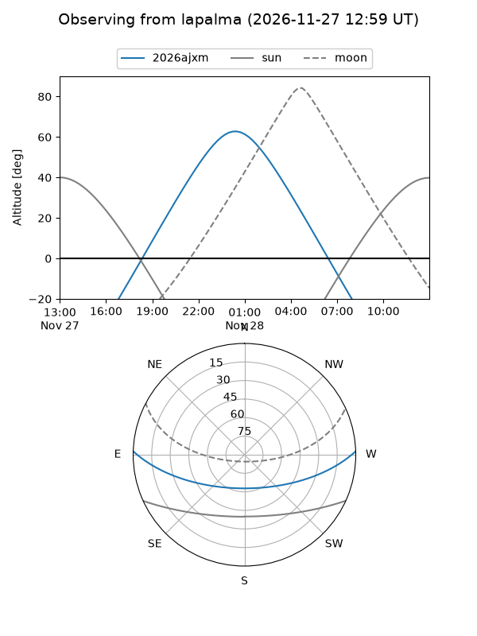
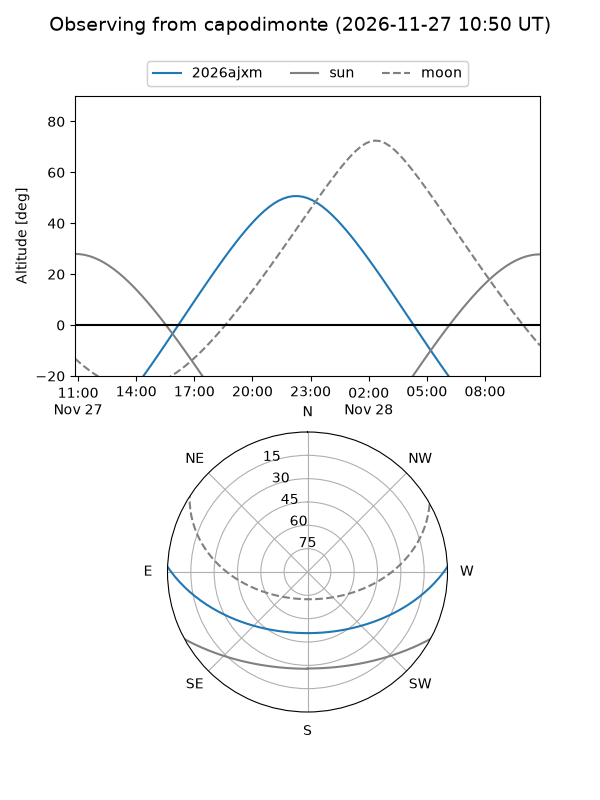
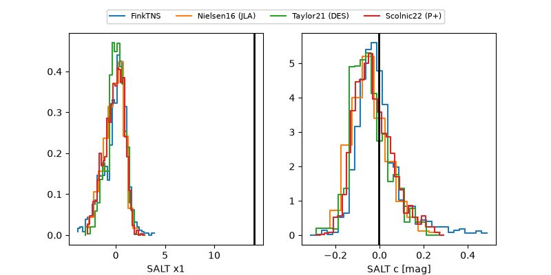

2026ajxm
Target 2026ajxm at 2026-11-28 04:22
Aliases and brokers:
FINK-ZTF: ztf.fink-portal.org/ZTF26aciohtz
Lasair-ZTF: lasair-ztf.lsst.ac.uk/objects/ZTF26aciohtz
ALeRCE-ZTF: alerce.online/object/ZTF26aciohtz
YSE-PZ: ziggy.ucolick.org/yse/transient_detail/2026ajxm
TNS name: wis-tns.org/object/2026ajxm
Direct TNS query: direct search
alt names
ZTF26aciohtz (ztf,fink_ztf)
2026ajxm (tns,yse)
Coordinates:
equatorial (ra, dec) = 54.4237,+1.47840
equatorial (HMS+DMS) = 03:37:41.70,+01:28:42.24
galactic (l, b) = (184.1716,-40.83734)
Flags:
likely cv: !!
CV pen: 0.14847551529044767
peak dt: +4.7
Photometry:
last ztfr=19.29
3 ztfr detections
Lightcurve

Visibility



Additional plots
